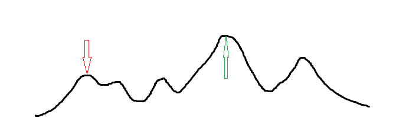

OI Wiki · prijevod · RaznoOI Wiki · translation · Miscellaneous
Hill climbingHill climbing
Uvod
Hill climbing (penjanje uzbrdo) metoda je lokalnog odabira najboljeg rješenja koja koristi heuristiku; riječ je o poboljšanju pretraživanja u dubinu (DFS) koje pomoću povratnih informacija pomaže pri donošenju odluka o generiranju rješenja.
Jednostavno rečeno: kad trenutačno ne možemo izravno doći do optimalnog rješenja, ali za dva rješenja znamo odrediti koje je bolje, na temelju nekih povratnih informacija generiramo novo moguće rješenje.
Stoga hill climbing svaki put u blizini trenutačno najboljeg pronađenog rješenja \(x\) traži novo rješenje. Ako je to novo rješenje \(x'\) bolje, prelazimo na \(x'\), inače ostajemo gdje jesmo.
Za unimodalne funkcije ovaj algoritam očito radi.
P: Ako već znamo da je funkcija unimodalna, zašto ne upotrijebiti ternarno pretraživanje?
O: Prednost hill climbinga jest to što, kad ne znamo kako se piše pravo rješenje (često kod zlobnih zadataka iz računalne geometrije i zlobnih matematičkih zadataka) ili kad stanje ima mnogo dimenzija pa nije lako napisati podjelu (primjer 2 može se ispravno riješiti i binarnim pretraživanjem), optimalno rješenje možemo dobiti vrlo grubim računanjem.
Međutim, za većinu funkcija koje treba optimizirati hill climbing lako upada u lokalni optimum, kao na slici dolje (optimalno rješenje je \(\color{green}{\Uparrow}\), a hill climbing može pronaći \(\color{red}{\Downarrow}\)).

Konkretna implementacija
Hill climbing obično uvodi parametar temperature (slično simuliranom kaljenju). Slikovito rečeno, hill climbing je poput pijanog zeca koji skače po planini: svaki put skoči prema mjestu koje smatra višim (a to je često samo netočna procjena trenda); očito može jednim skokom stići na vrh, ali može i preskočiti vrh i prevaliti se na drugu stranu. No ne smeta, zec će se nakon toga skokom vratiti. Jasno je da je taj proces vrlo neučinkovit i zec nikad ne bi našao izlaz, pa se tijekom procesa zec trijezni i pri svakom skoku postaje oprezniji te skače malo manje, kako bi stigao do odgovarajuće optimalne točke.
Postupno triježnjenje zeca jest proces hlađenja, tj. parametar temperature tijekom penjanja neprestano se smanjuje.
O hlađenju: parametar hlađenja konstanta je malo manja od \(1\), obično iz \([0.985, 0.999]\).
Primjeri zadataka
「JSOI2008」球形空间产生器 (Generator sfernog prostora)
Zadana je \(n + 1\) točka u \(n\)-dimenzionalnom prostoru za koje se zna da leže na istoj \(n\)-dimenzionalnoj sferi; odredite središte sfere. \(n \leq 10\), apsolutne vrijednosti koordinata ne prelaze \(20000\).
Rješenje
Očito unimodalna funkcija, pa se može riješiti hill climbingom. Tijek algoritma za ovaj zadatak:
- Središte sfere inicijaliziramo kao težište zadanih točaka (tj. svaka njegova koordinata prosjek je odgovarajućih koordinata svih zadanih točaka), kako bismo smanjili količinu pretraživanja.
- Za trenutačno središte izračunamo prosjek euklidskih udaljenosti svih zadanih točaka do njega.
- Prođemo kroz sve zadane točke. Bilježimo vrijednost promjene \(\textit{cans}\) (zasebno za svaku dimenziju): za euklidsku udaljenost svake točke, ako je veća od prosjeka, vrijednosti promjene dodamo razliku, inače je oduzmemo. Zapravo tu usporedbu i ne treba raditi: dovoljno je ne gledati apsolutnu vrijednost i računati izravno s koordinatama. Taj proces možemo zorno zamisliti kao novo središte koje guramo po prostoru: kad naiđemo na predaleku točku, povučemo ga malo prema njoj, a kad naiđemo na preblisku točku, odgurnemo ga malo od nje.
- Zabilježeni \(\textit{cans}\) pomnožimo temperaturom, ažuriramo središte i vratimo se na korak 2.
- Završavamo kad temperatura padne ispod zadanog praga.
Dakle, pri ažuriranju središta ne smijemo izravno dodati vrijednost promjene, nego umnožak vrijednosti promjene i temperature.
Ne može se svaki zadatak s hill climbingom riješiti baš pomoću temperature; ovo je samo jedan primjer.
Primjer koda
#include <cmath>
#include <iomanip>
#include <iostream>
using namespace std;
double ans[10001], cans[100001], dis[10001], tot, f[1001][1001];
int n;
void check() {
tot = 0;
for (int i = 1; i <= n + 1; i++) {
dis[i] = 0;
cans[i] = 0;
for (int j = 1; j <= n; j++)
dis[i] += (f[i][j] - ans[j]) * (f[i][j] - ans[j]);
dis[i] = sqrt(dis[i]); // euklidska udaljenost
tot += dis[i];
}
tot /= (n + 1); // prosjek
for (int i = 1; i <= n + 1; i++)
for (int j = 1; j <= n; j++)
cans[j] += (dis[i] - tot) * (f[i][j] - ans[j]) /
tot; // za svaku dimenziju ažuriramo vrijednost promjene: doprinos = razlika euklidskih udaljenosti * razlika koordinata
}
int main() {
cin >> n;
for (int i = 1; i <= n + 1; i++)
for (int j = 1; j <= n; j++) {
cin >> f[i][j];
ans[j] += f[i][j];
}
for (int i = 1; i <= n; i++) ans[i] /= (n + 1); // inicijalizacija
for (double t = 10001; t >= 0.0001; t *= 0.99995) { // neprestano hlađenje
check();
for (int i = 1; i <= n; i++) ans[i] += cans[i] * t; // promjena
}
cout << fixed << setprecision(3);
for (int i = 1; i <= n; i++) cout << ans[i] << ' ';
}
「BZOJ 3680」吊打 XXX (Premlatiti XXX-a)
Odredite težinsku (generaliziranu) Fermatovu točku za \(n\) točaka.
Rješenje
Okvir je sličan, uz malo fizikalnog znanja.
Primjer koda
#include <cmath>
#include <iomanip>
#include <iostream>
constexpr int N = 10005;
int n, x[N], y[N], w[N];
double ansx, ansy;
void hillclimb() {
double t = 1000;
while (t > 1e-8) {
double nowx = 0, nowy = 0;
for (int i = 1; i <= n; ++i) {
double dx = x[i] - ansx, dy = y[i] - ansy;
double dis = sqrt(dx * dx + dy * dy);
nowx += (x[i] - ansx) * w[i] / dis;
nowy += (y[i] - ansy) * w[i] / dis;
}
ansx += nowx * t, ansy += nowy * t;
if (t > 0.5)
t *= 0.5;
else
t *= 0.97;
}
}
int main() {
std::cin.tie(nullptr)->sync_with_stdio(false);
std::cin >> n;
for (int i = 1; i <= n; ++i) {
std::cin >> x[i] >> y[i] >> w[i];
ansx += x[i], ansy += y[i];
}
ansx /= n, ansy /= n;
hillclimb();
std::cout << std::fixed << std::setprecision(3) << ansx << ' ' << ansy
<< '\n';
return 0;
}
Optimizacija
Lako se dolazi do ideje da, kako bismo dobili što bolji odgovor, hill climbing možemo pokrenuti više puta. Načini su promjena početnog stanja, promjena parametra hlađenja, promjena početne temperature itd.; zatim otvorimo globalnu varijablu za najbolje rješenje u koju pamtimo odgovor. Nakon svakog završenog pokretanja ažuriramo globalni optimum.
Problem koji se pri tome može pojaviti jest prekoračenje vremenskog ograničenja; na pravom natjecanju ručno napravite velike testne podatke i na njima podesite parametre.
Nedostaci
Nedostatak hill climbinga već je spomenut: lako upada u lokalni optimum. Kad ciljna funkcija nije unimodalna, taj je nedostatak fatalan. Zato uvodimo simulirano kaljenje.
Introduction
Hill climbing is a method of local best-choice selection that uses heuristics; it is an improvement of depth-first search that uses feedback information to help make decisions about generating solutions.
Put simply: when we currently cannot reach the optimal solution directly, but we can tell which of two solutions is better, we generate a new candidate solution based on some feedback information.
Therefore, hill climbing each time looks for a new solution near the best solution \(x\) found so far. If the new solution \(x'\) is better, we move to \(x'\); otherwise we stay.
For unimodal functions this algorithm obviously works.
Q: If we already know the function is unimodal, why not use ternary search?
A: The advantage of hill climbing is that when you do not know how to write the intended solution (common in nasty computational geometry and nasty math problems), or when the state has many dimensions so that a divide-and-conquer approach is not easy to write (example 2 can be solved correctly with binary search), you can obtain the optimal solution by very brute-force computation.
However, for most functions that need to be optimized, hill climbing easily gets stuck in a local optimum, as in the figure below (the optimal solution is \(\color{green}{\Uparrow}\), while the optimum hill climbing may find is \(\color{red}{\Downarrow}\)).
Concrete implementation
Hill climbing usually introduces a temperature parameter (similar to simulated annealing). By analogy, hill climbing is like a drunk rabbit hopping on a mountain: each time it jumps toward the place it believes is higher (which is often only an inaccurate guess of the trend); obviously it may reach the summit in one jump, but it may also overshoot and tumble over to the other side. That is fine, though: after tumbling over, the rabbit will jump back. Clearly this process is quite useless and the rabbit would never find its way, so during the process the rabbit sobers up and becomes more cautious with each jump, jumping a little less, in order to reach a suitable optimal point.
The rabbit gradually sobering up is the cooling process, i.e. the temperature parameter keeps decreasing during the climb.
About cooling: the cooling parameter is a constant slightly less than \(1\), usually chosen from \([0.985, 0.999]\).
Example problems
「JSOI2008」球形空间产生器 (Spherical Space Generator)
Given \(n + 1\) points in \(n\)-dimensional space that are known to lie on the same \(n\)-dimensional sphere, find the center of the sphere. \(n \leq 10\), the absolute values of the coordinates do not exceed \(20000\).
Solution
Clearly a unimodal function, so it can be solved with hill climbing. The algorithm for this problem:
- Initialize the center as the centroid of the given points (i.e. each of its coordinates is the average of the corresponding coordinates of all given points), to reduce the amount of search.
- For the current center, compute the average Euclidean distance from each known point to this center.
- Iterate over all known points. Keep a change value \(\textit{cans}\) (recorded separately for each dimension): for the Euclidean distance of each point, if it is greater than the average, add the difference to the change value, otherwise subtract it. In fact there is no need to compare at all: just ignore the absolute value and compute directly with the coordinates. This process can be visualized as a new center being pushed around in space: when it meets a point that is too far, it is pulled a bit toward the point, and when it meets a point that is too close, it is pushed a bit away from the point.
- Multiply the recorded \(\textit{cans}\) by the temperature, update the center, and go back to step 2.
- Stop when the temperature is below some given threshold.
Therefore, when updating the center we must not add the change value directly, but the product of the change value and the temperature.
Not every hill climbing problem can be solved concretely with a temperature; this is just one example.
Reference code
#include <cmath>
#include <iomanip>
#include <iostream>
using namespace std;
double ans[10001], cans[100001], dis[10001], tot, f[1001][1001];
int n;
void check() {
tot = 0;
for (int i = 1; i <= n + 1; i++) {
dis[i] = 0;
cans[i] = 0;
for (int j = 1; j <= n; j++)
dis[i] += (f[i][j] - ans[j]) * (f[i][j] - ans[j]);
dis[i] = sqrt(dis[i]); // Euclidean distance
tot += dis[i];
}
tot /= (n + 1); // average
for (int i = 1; i <= n + 1; i++)
for (int j = 1; j <= n; j++)
cans[j] += (dis[i] - tot) * (f[i][j] - ans[j]) /
tot; // for each dimension update the change value: contribution = difference of Euclidean distances * coordinate difference
}
int main() {
cin >> n;
for (int i = 1; i <= n + 1; i++)
for (int j = 1; j <= n; j++) {
cin >> f[i][j];
ans[j] += f[i][j];
}
for (int i = 1; i <= n; i++) ans[i] /= (n + 1); // initialization
for (double t = 10001; t >= 0.0001; t *= 0.99995) { // keep cooling down
check();
for (int i = 1; i <= n; i++) ans[i] += cans[i] * t; // update
}
cout << fixed << setprecision(3);
for (int i = 1; i <= n; i++) cout << ans[i] << ' ';
}
「BZOJ 3680」吊打 XXX (Beat Up XXX)
Find the weighted (generalized) Fermat point of \(n\) points.
Solution
The framework is similar, with a bit of physics.
Reference code
#include <cmath>
#include <iomanip>
#include <iostream>
constexpr int N = 10005;
int n, x[N], y[N], w[N];
double ansx, ansy;
void hillclimb() {
double t = 1000;
while (t > 1e-8) {
double nowx = 0, nowy = 0;
for (int i = 1; i <= n; ++i) {
double dx = x[i] - ansx, dy = y[i] - ansy;
double dis = sqrt(dx * dx + dy * dy);
nowx += (x[i] - ansx) * w[i] / dis;
nowy += (y[i] - ansy) * w[i] / dis;
}
ansx += nowx * t, ansy += nowy * t;
if (t > 0.5)
t *= 0.5;
else
t *= 0.97;
}
}
int main() {
std::cin.tie(nullptr)->sync_with_stdio(false);
std::cin >> n;
for (int i = 1; i <= n; ++i) {
std::cin >> x[i] >> y[i] >> w[i];
ansx += x[i], ansy += y[i];
}
ansx /= n, ansy /= n;
hillclimb();
std::cout << std::fixed << std::setprecision(3) << ansx << ' ' << ansy
<< '\n';
return 0;
}
Optimization
An easy idea: to get as good an answer as possible, we can run hill climbing several times. Options include changing the initial state, changing the cooling parameter, changing the initial temperature, etc.; then keep a global best solution to record the answer. After each run of hill climbing, update the global optimum.
A possible problem with this is exceeding the time limit; in a real contest, generate large test data by hand and tune the parameters on it.
Disadvantages
The disadvantage of hill climbing was already mentioned above: it easily gets stuck in a local optimum. When the objective function is not unimodal, this disadvantage is fatal. That is why we introduce simulated annealing.